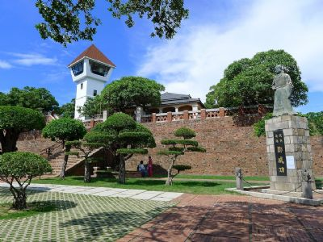
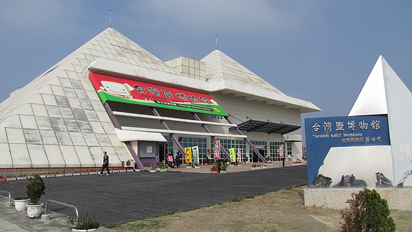
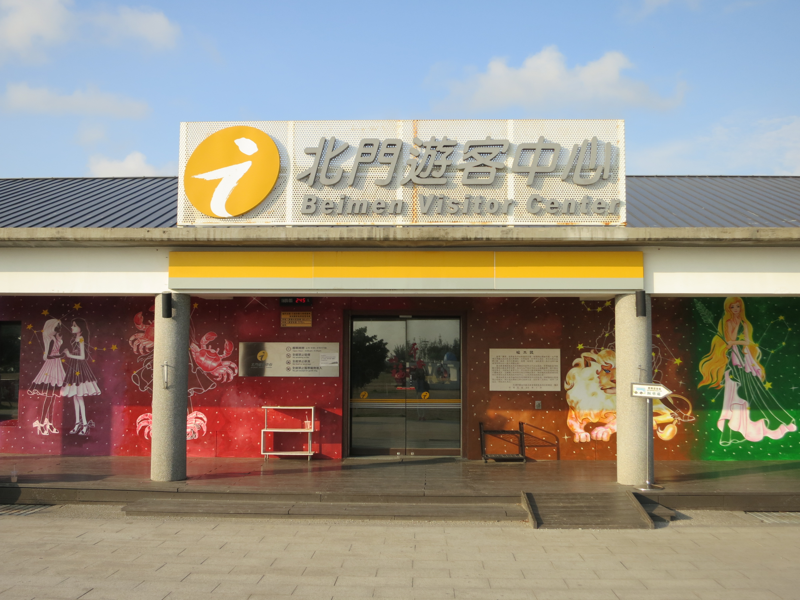
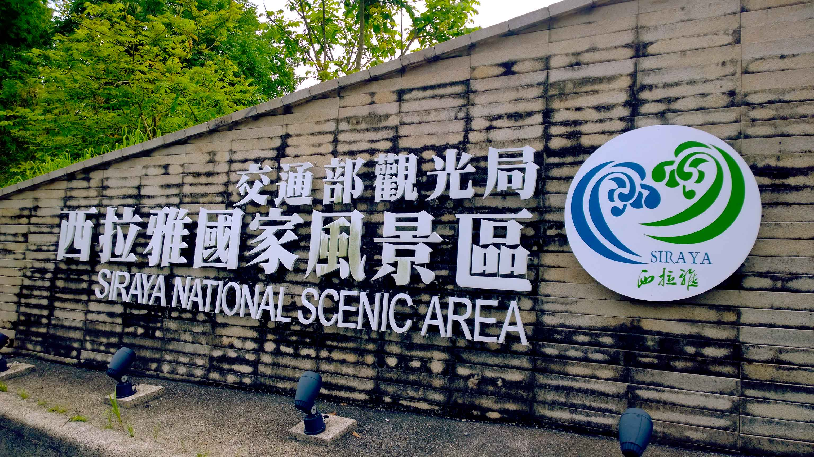

歡迎來台南遊玩
台南比你想得更好玩喔!有美食、景點、人情的台南市。
- 
安平古堡
古稱奧倫治城、熱蘭遮城、王城、安平城、臺灣城，位於今臺灣臺南市。最早建於1624年，是臺灣最早的要塞建築。自建城以來，曾經是荷蘭人統治臺灣的中樞、也曾經是鄭氏王朝3代的居城。
- 
鹽業博物館
台灣鹽博物館」不僅是全台唯一鹽業博物館，館內保存有台灣數百年的鹽業文化資產。102年11月再與對岸「河北黃驊海鹽博物館」交流。展出中國歷代各種製鹽方法、鹽的歷史，「鹽的知識」、有「電子手翻書」及以「動漫」方式呈現四庫全書記載之「熬波圖」等，饒富教育意義。
- 
北門遊客中心
北門遊客中心是由北門洗滌鹽工廠舊建物群中的西南側倉庫群所改建，外觀仍保留著原工廠山牆斜屋頂造型。全館佈設由北而南以地理分區概念介紹雲嘉南濱海國家風景區的景點，並整合區內「鹽業歷史」、「濕地生態」、「宗教人文」、「地方產業」與「文學藝術」等觀光資源，規劃主題區介紹與多媒體互動區。
- 
西拉雅國家風景區
西拉雅國家風景區位於臺灣臺南市嘉南平原東部的山麓地帶，為中華民國交通部觀光局規劃成立的一座國家風景區，轄區內有關子嶺、烏山頭水庫、虎頭埤水庫、曾文水庫等知名風景區及左鎮文化區。名稱源自昔日分布此區的臺灣原住民西拉雅族。